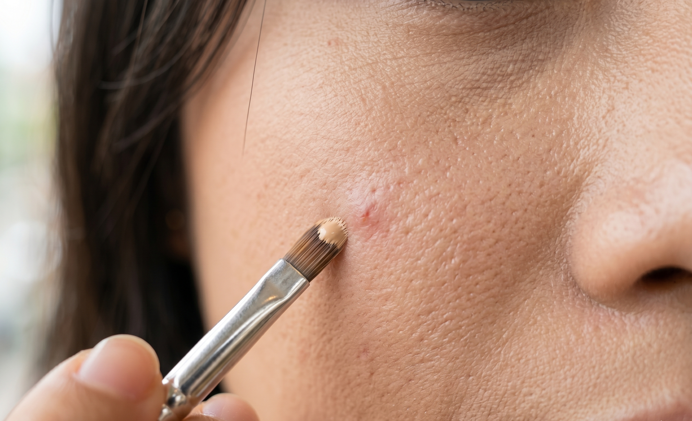
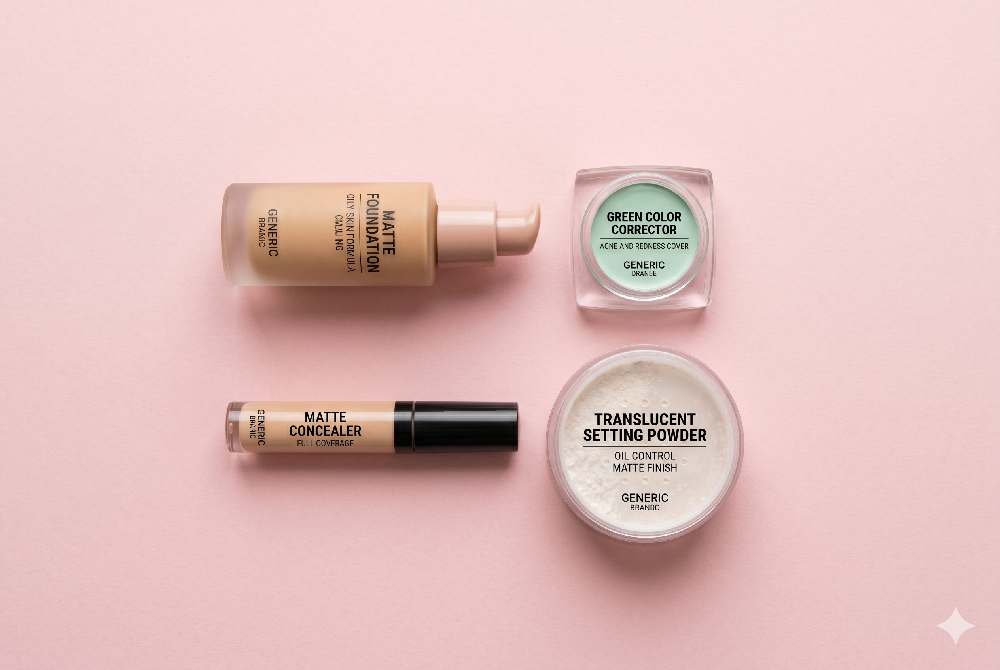

Makeup che khuyết điểm da mụn, da dầu: cách lên nền không mốc, không trôi.
Chị có làn da dầu, hay nổi mụn, và mỗi lần makeup là một lần “đánh vật”? Che nốt mụn thì lộ mảng dày, đến trưa thì nền trôi, lỗ chân lông lại càng rõ?
Mình hiểu. Da dầu mụn là loại da khó makeup nhất — nhưng hoàn toàn có cách xử lý gọn gàng.
Trong bài này, Lily chia sẻ cách che khuyết điểm da mụn đúng kỹ thuật: chuẩn bị da thế nào, chọn sản phẩm ra sao, và thao tác từng bước để lớp nền mỏng, mịn, che được mụn mà vẫn trông như da thật. Chị đọc kỹ phần chọn sản phẩm — đó là nơi nhiều người làm sai ngay từ đầu.
Vì sao da dầu, da mụn hay bị mốc và trôi nền?

Hiểu nguyên nhân thì chị mới xử lý đúng gốc.
Da dầu tiết nhiều bã nhờn. Lượng dầu này “đẩy” lớp nền lên, khiến makeup trôi, loang và xuống tông nhanh. Còn da mụn thì bề mặt gồ ghề — nốt mụn nổi cộm, thâm mụn lõm hoặc sậm màu — nên nền dễ đọng lại không đều, tạo cảm giác mốc.
Hai vấn đề này dẫn đến ba lỗi phổ biến:
- Che càng dày để giấu mụn → càng lộ, càng mốc.
- Da đổ dầu làm concealer trượt khỏi nốt mụn sau vài giờ.
- Dùng sản phẩm bít tắc lỗ chân lông → mụn nặng thêm.
Vì vậy khi che khuyết điểm da mụn, mục tiêu không phải “che thật kín”, mà là che đúng chỗ, mỏng, và giữ cho da khô thoáng suốt ngày.
Bước 1: Chuẩn bị da trước khi che khuyết điểm
Đây là bước quyết định lớp nền có bền hay không, nhưng lại hay bị bỏ qua.
- Làm sạch: rửa mặt với sữa rửa mặt dịu nhẹ để lấy đi dầu thừa. Da sạch thì nền mới bám.
- Dưỡng ẩm nhẹ: nhiều bạn da dầu sợ dưỡng ẩm — đó là sai lầm. Da thiếu ẩm sẽ tiết dầu nhiều hơn. Chọn kem dưỡng dạng gel, mỏng, thẩm thấu nhanh.
- Kem chống nắng + kem lót kiềm dầu: chống nắng là bắt buộc; sau đó dùng kem lót (primer) kiểm soát dầu để tạo lớp đệm mịn cho nền.
Một nguyên tắc rất quan trọng với da mụn: ưu tiên sản phẩm có nhãn “non-comedogenic” (không gây bít tắc lỗ chân lông). Đây là yếu tố giúp giảm nguy cơ phát sinh mụn khi trang điểm thường xuyên (đọc thêm về non-comedogenic trên Hello Bacsi).
Bước 2: Chọn đúng sản phẩm cho da dầu mụn

Chọn sai sản phẩm thì kỹ thuật giỏi mấy cũng mốc. Đây là bảng gợi ý:
| Sản phẩm | Nên chọn | Tránh |
|---|---|---|
| Kem nền / cushion | Dạng lì (matte), kiềm dầu, non-comedogenic | Dạng bóng (dewy), che phủ quá dày |
| Color corrector | Xanh lá (trung hòa nốt đỏ) | Bỏ qua bước này khi mụn đỏ nhiều |
| Concealer | Độ che phủ cao, lâu trôi | Concealer quá khô gây bong nốt mụn |
| Phấn phủ | Phấn bột kiềm dầu, mịn | Phủ quá nhiều gây cakey |
Mẹo: với da dầu mụn, kết cấu mỏng nhẹ luôn thắng. Nền lỏng, dễ tán và set nhanh sẽ giữ lớp da khô thoáng tốt hơn nền đặc.
Bước 3: Cách che khuyết điểm da mụn từng bước
Đây là phần kỹ thuật cốt lõi. Chị làm đúng thứ tự dưới đây:
1. Trung hòa màu nốt mụn đỏ (color correcting)
Nốt mụn viêm thường đỏ. Chấm một chút corrector xanh lá lên đúng nốt đỏ, vỗ nhẹ cho tiệp. Màu xanh lá trung hòa màu đỏ, nhờ đó bước sau chị không cần che dày.
2. Đánh nền mỏng toàn mặt
Tán một lớp nền/cushion mỏng đều khắp mặt bằng mút ẩm. Đừng cố che mụn ở bước này — chỉ làm đều màu nền tổng thể. Nền mỏng để dành “đất” cho concealer.
3. Chấm concealer đúng vào nốt mụn
Đây là bí quyết quan trọng nhất: chấm concealer ngay chính giữa nốt mụn, không quẹt. Sau đó dùng cọ nhỏ hoặc đầu ngón tay tán mép ngoài vào, giữ phần giữa vẫn đủ độ che. Cách này giúp che được mụn mà không tạo mảng dày.
4. Set ngay bằng phấn
Mỗi vùng vừa che xong, phủ ngay một lớp phấn mỏng lên để “khóa” concealer. Set ngay từng phần sẽ bền hơn nhiều so với để xong hết mới phủ.
5. Che thâm mụn (nếu có)
Với vết thâm sậm màu, chị có thể lót một chút corrector tone cam/đào trước khi chấm concealer, rồi set lại. Thâm mụn cần trung hòa tông, không chỉ che bằng concealer sáng.
Bước 4: Giữ lớp nền lâu trôi cho da dầu
Che đẹp buổi sáng mà trưa trôi hết thì công cốc. Vài cách giữ nền cho da dầu:
- Set kỹ vùng chữ T bằng phấn bột kiềm dầu — đây là nơi đổ dầu nhiều nhất.
- Khóa nền bằng xịt khoáng/fixing để các lớp hòa vào nhau.
- Mang theo giấy thấm dầu: giữa ngày, thấm sạch dầu trước, rồi mới dặm phấn nhẹ. Đừng chồng phấn lên dầu — đó là nguyên nhân số một gây mốc.
- Hạn chế chạm tay lên mặt trong ngày để tránh xê dịch lớp che.
Những lỗi thường gặp khi che khuyết điểm da mụn
- Che quá dày để giấu mụn. Càng dày càng lộ kết cấu mụn và càng mốc. Mỏng + đúng chỗ mới tự nhiên.
- Bỏ qua bước color correcting. Nốt đỏ mà che thẳng bằng concealer thì phải chồng rất nhiều lớp, dễ vón.
- Không set ngay sau khi che. Concealer chưa khóa sẽ trượt khỏi nốt mụn khi da đổ dầu.
- Dùng sản phẩm bít tắc lỗ chân lông. Khiến mụn nặng thêm sau mỗi lần makeup.
Lưu ý quan trọng về da mụn
Phần này mình muốn nói thật lòng với chị, vì sức khỏe làn da quan trọng hơn lớp makeup.
Trang điểm chỉ che tạm thời, không điều trị mụn. Với mụn viêm sưng to, mụn mủ hoặc da đang kích ứng, việc đánh nền đè lên có thể làm tình trạng nặng hơn. Những lúc đó, để da “thở” sẽ tốt hơn.
Nếu chị bị mụn dai dẳng, mụn viêm nhiều hoặc nghi ngờ da có vấn đề bệnh lý, hãy gặp bác sĩ da liễu để được điều trị đúng — makeup không thay thế được điều này. Và dù lớp che mỏng đến đâu, cuối ngày chị luôn phải tẩy trang thật sạch rồi dưỡng da, để lỗ chân lông được thông thoáng.
Câu hỏi thường gặp
Da dầu mụn nên dùng kem nền hay cushion?
Cả hai đều được, miễn là chọn loại lì (matte), kiềm dầu và non-comedogenic. Cushion tiện và nhanh hơn cho người mới; kem nền lì cho độ bền cao hơn.
Che khuyết điểm da mụn có cần color corrector không?
Nếu mụn đỏ nhiều thì rất nên. Corrector xanh lá giúp trung hòa màu đỏ, nhờ đó chị che mỏng hơn mà vẫn hiệu quả. Mụn nhẹ thì có thể bỏ qua.
Vì sao concealer cứ bong khỏi nốt mụn sau vài giờ?
Thường do da đổ dầu và chưa set kỹ. Hãy set ngay sau khi che, kiềm dầu tốt từ đầu và dặm lại bằng giấy thấm dầu giữa ngày.
Makeup mỗi ngày có làm da mụn nặng hơn không?
Da mụn rất cần “thở”. Dù dùng sản phẩm tốt, trang điểm hằng ngày vẫn có thể tăng nguy cơ bít tắc. Hãy tẩy trang kỹ và cho da nghỉ vào những ngày không cần thiết.
Nền lì có làm da khô và lộ vân không?
Có thể, nếu chị bỏ qua bước dưỡng ẩm. Da đủ ẩm thì nền lì vẫn mịn. Dưỡng ẩm nhẹ trước khi makeup là chìa khóa.
Kết luận
Che khuyết điểm da mụn, da dầu không khó nếu chị nhớ đúng nguyên tắc. Tóm lại, một lớp che khuyết điểm da mụn đẹp cần ba điều:
- Chuẩn bị da và chọn sản phẩm non-comedogenic — quyết định 50% kết quả.
- Che đúng chỗ, mỏng, set ngay — thay vì che dày toàn mặt.
- Kiềm dầu và dặm lại đúng cách để giữ nền cả ngày.
Chị có thể tham khảo thêm các mẹo khác trong chuyên mục blog của Lily Chen, hoặc xem bài trang điểm cá nhân có hại da không để chăm da đúng cách. Còn nếu chị muốn được hướng dẫn trực tiếp cách xử lý làn da của riêng mình, khóa Trang Điểm Cá Nhân tại Lily Chen có thể giúp chị. Nhưng trước hết, cứ thử các bước trên — da dầu mụn vẫn makeup đẹp được, chỉ cần đúng cách thôi.